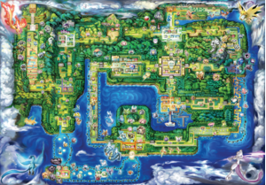
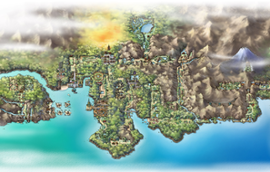
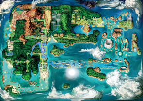
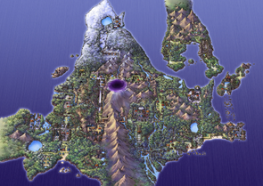
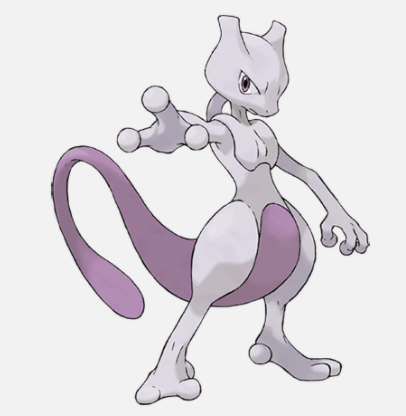
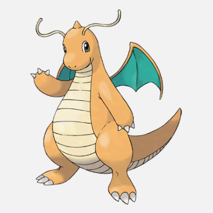
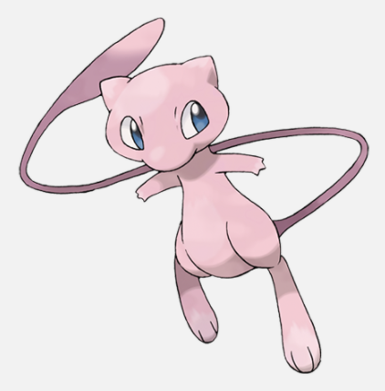
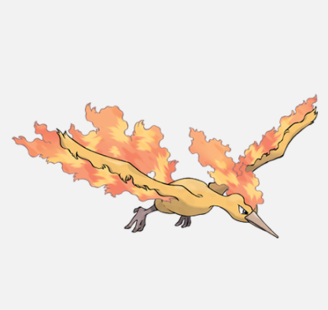
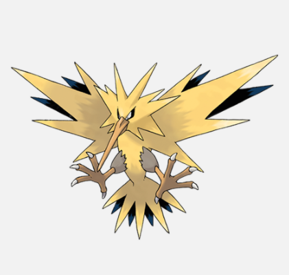

O Snorlax não fica satisfeito a menos que coma mais de 400 kg de comida todos os dias. Quando termina de comer, adormece prontamente.
Os pikachus, que podem gerar eletricidade poderosa, têm as bochechas extremamente macias e super elásticas.
Nos lugares de seu corpo onde a lã não cresce, sua pele é de borracha e não conduz eletricidade. Esses pontos são seguros para tocar.
Kanto (em japonês: カントー地方, Kantō-chihō) é um país ou região fictícia, da série Pokémon.
A região Johto (japonês: ジ ョ ウ ト 地方 Johto-chihō) é uma região do mundo Pokémon. Ele está localizado a oeste de Kanto, e conforme revelado pelo programa de rádio Sinnoh Sound, está localizado ao sul de Sinnoh.
A região de Hoenn (japonês: ホ ウ エ ン 地方 Hoenn-chihō) é uma região do mundo Pokémon. Ele está localizado ao sul de Sinnoh.
A região de Sinnoh (japonês: シ ン オ ウ 地方 Sinnoh-chihō) é uma região do mundo Pokémon. Ele está localizado ao norte de Kanto, Johto, e Hoenn.
Mewtwo - CP máximo de 4144.75
Dragonite - CP máximo de 3500.6
Mew - CP máximo de 3299.17
Moltres - CP máximo de 3240.47
Zapdos - CP máximo de 3114.38
